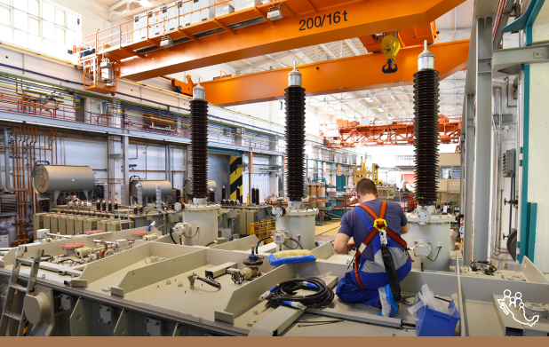

Proyectos y Programas Prioritarios
Opina sobre los proyectos y programas prioritarios impulsados por el actual Gobierno de México
100 Universidades Públicas
Programa de Apoyo para el Bienestar de las Niñas y Niños, Hijos de Madres Trabajadoras
Becas de Educación Básica para el Bienestar Benito Juárez
Beca Universal para estudiantes de Educación Media Superior Benito Juárez
Beca Educación Superior Jóvenes Escribiendo el Futuro
Producción para el Bienestar
Caminos Rurales
Canasta Básica de Alimentos
Refinería en Dos Bocas, Tabasco
Crédito Ganadero a la palabra
Desarrollo del Istmo de Tehuantepec

Fertilizantes para el Bienestar
Internet para Tod@s
Jóvenes Construyendo el Futuro
Atención médica y medicamentos gratuitos
Mejoramiento Urbano
Rehabilitación de Refinerías
Modernización del Aeropuerto Internacional de la Ciudad de México
Nuevo Aeropuerto Internacional Felipe Ángeles

Pensión para Personas con Discapacidad
Pensión Universal para Personas Adultas Mayores
Precios de Garantía a Productores del Campo
Plan Nacional de Energía Eléctrica
Plan Nacional de Gas y Petroleo
Reconstruyendo Esperanza
Rescate del Lago de Texcoco
Sembrando Vida
Tandas para el Bienestar
Tren Maya
Zona Libre de la Frontera Norte
